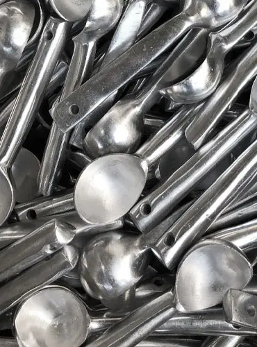
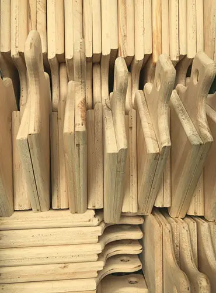
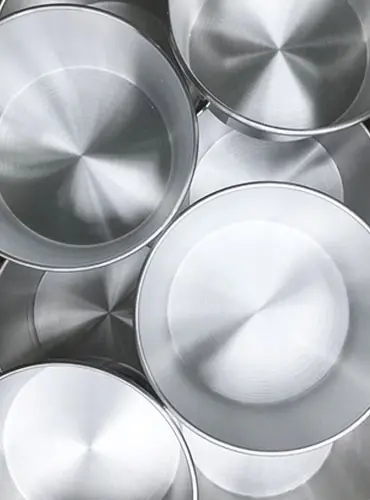

Aluminio Fundido
El Aluminio Fundido es el material de mayor calidad para menaje de Cocina, si nos referimos al aluminio como materia prima. Su fabricación se lleva a cabo al fundir bloques de aluminio e inyectarlos en moldes con la forma del utensilio a fabricar.

Madera Cepillada
En nuestras referencias utilizamos madera cepillada; el proceso del cepillado es el último proceso básico que se realiza a cualquier elemento de madera. Consiste en eliminar irregularidades y dotar de un buen acabado a la madera con el fin de nivelar, alisar y obtener las medidas deseadas en las estructuras de madera.

Aluminio Repujado
Partiendo de una hoja o lamina de Aluminio, se empuja esta misma sobre un modelo fijo, forzando la hoja a que tome la forma del modelo; al dibujo con relieve que queda marcado sobre la superficie de le llama repujado. En definitiva, esta técnica de repujado tradicional se conoce como la habilidad de crear un diseño hundido en una hoja de aluminio.